QA
Details on how to use the automated assessment protocol are here
The Phenotypic File
Here we detail the quality assessment (QA) columns given in the phenotypic file (download here). There are automated metrics provided with columns having the prefix anat_ or func_. There are also manual quality assessment of the data by three raters with columns having the prefix qc_.
Automated QA
These columns reflect automated metrics with descriptions given further down. To determine outliers one might use 1.5x or 3x the inter-quartile range (IQR). Here, we provide a list of the columns for automated anatomical or functional quality assessment.
Anatomical
- anat_cnr
- anat_efc
- anat_fber
- anat_fwhm
- anat_qi1
- anat_snr
Functional
- func_efc
- func_fber
- func_fwhm
- func_dvars
- func_outlier
- func_quality
- func_mean_fd
- func_num_fd
- func_perc_fd
- func_gsr
Anatomical
For each point below, we will describe a given measure via the following format: “Measure - Column: Summary”
- Contrast to Noise Ratio [anat_cnr]: Calculated as the mean of the gray matter values minus the mean of the white matter values, divided by the standard deviation of the air values 1.
- Entopy Focus Criterion [anat_efc]: Shannon’s entropy is used to summarize the principal directions distribution, higher energy indicating the distribution is more uniform (i.e., less noisy) 2.
- Foreground to Background Energy Ratio [anat_fber]: Mean energy of image values (i.e., mean of squares) within the head relative to outside the head.
- Smoothness of Voxels [anat_fwhm]: The full-width half maximum (FWHM) of the spatial distribution of the image intensity values in terms of voxels (e.g., a value of 3 implies smoothness of 3 voxels) 3.
- Percent of Artifact Voxels [anat_qi1]: The proportion of voxels with intensity corrupted by artifacts normalized by the number of voxels in the background 4.
- Signal to Noise Ratio [anat_snr]: The mean of image values within gray matter divided by the standard deviation of the image values within air (i.e., outside the head) 1.
Below we show the results of the anatomical QA measures for all the ABIDE subjects.
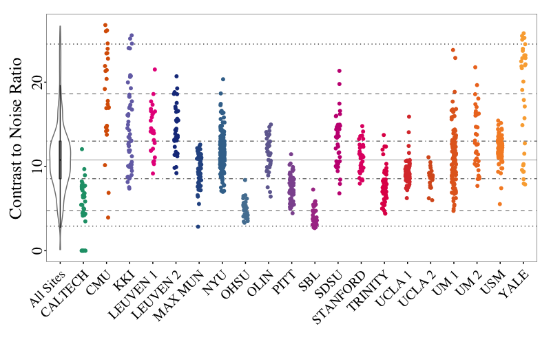
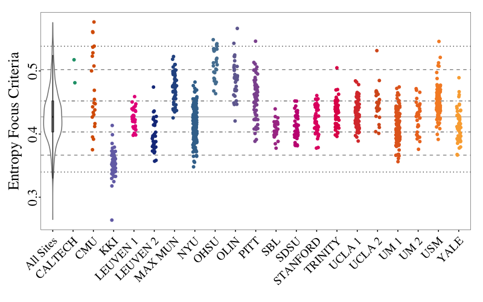
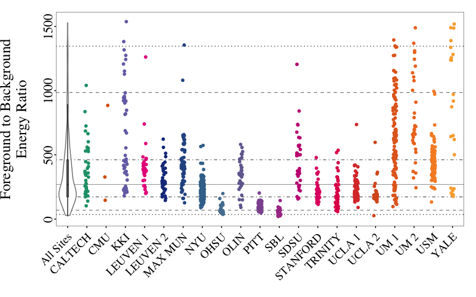
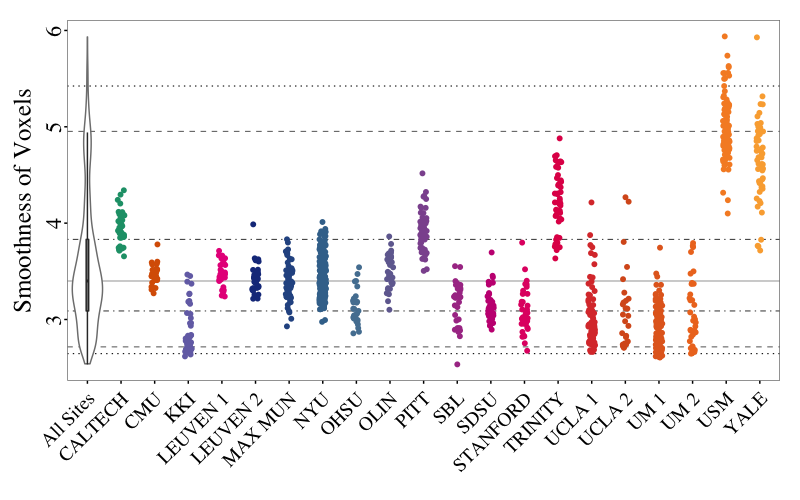
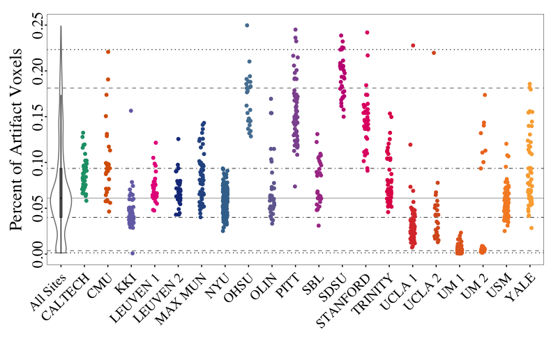
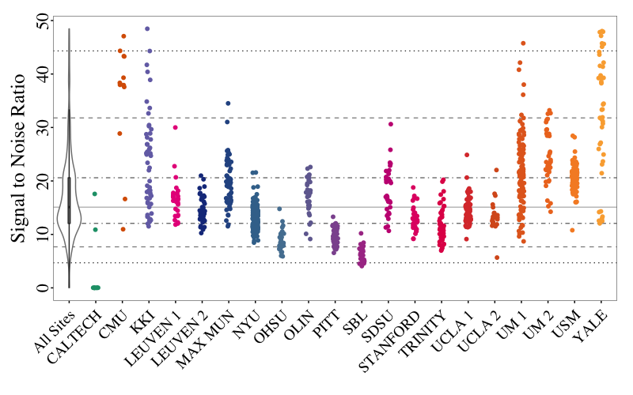
Functional
Note that some metrics quantify the quality of the data in the spatial domain (columns: func_efc, func_fber, func_fwhm, and func_gsr) and use the mean functional image for this purpose. Other metrics quantify the quality of the data in the temporal domain (columns: func_dvars, func_outlier, func_quality, func_mean_fd, func_num_fd, and func_perc_fd) and use the voxelwise time-series functional data.
- Entopy Focus Criterion [func_efc]: Shannon’s entropy is used to summarize the principal directions distribution, higher energy indicating the distribution is more uniform (i.e., less noisy) 2. Uses mean functional.
- Foreground to Background Energy Ratio [func_fber]: Mean energy of image values (i.e., mean of squares) within the head relative to outside the head. Uses mean functional.
- Smoothness of Voxels [func_fwhm]: The full-width half maximum (FWHM) of the spatial distribution of the image intensity values. Uses mean functional.
- Standardized DVARS [func_dvars]: The spatial standard deviation of the temporal derivative of the data, normalized by the temporal standard deviation and temporal autocorrelation 56. Uses functional time-series.
- Fraction of Outlier Voxels [func_outlier]: The mean fraction of outliers found in each volume using 3dTout command in AFNI (http://afni.nimh.nih.gov/afni) 7. Uses functional time-series.
- Mean Distance to Median Volume [func_quality]: The mean distance (1 – spearman’s rho) between each time-point’s volume and the median volume using AFNI’s 3dTqual command (http://afni.nimh.nih.gov/afni) 7. Uses functional time-series.
- Mean Framewise Displacement (FD) [func_mean_fd]: A measure of subject head motion, which compares the motion between the current and previous volumes. This is calculated by summing the absolute value of displacement changes in the x, y and z directions and rotational changes about those three axes. The rotational changes are given distance values based on the changes across the surface of a 50mm radius sphere 58. Uses functional time-series.
- Number FD greater than 0.2mm [func_num_fd]: The number of frames or volumes with displacement greater than 0.2mm. This is not shown below. Uses functional time-series.
- Percent FD greater than 0.2mm [func_perc_fd]: The percent of frames or volumes with displacement greater than 0.2mm. Uses functional time-series.
- Ghost to Signal Ratio [func_gsr]: A measure of the mean signal in the ‘ghost’ image (signal present outside the brain due to acquisition in the phase encoding direction) relative to mean signal within the brain. Uses mean functional.
Below we show the results of the functional QA measures for all the ABIDE subjects. We exclude the number of voxels with FD > 0.2mm and only show the percent of voxels with FD > 0.2mm.
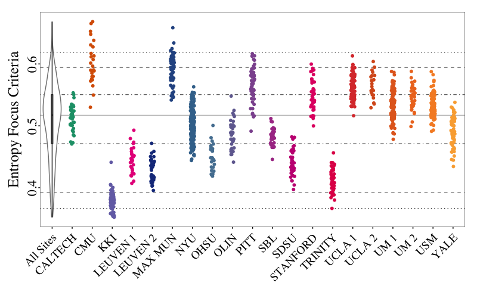
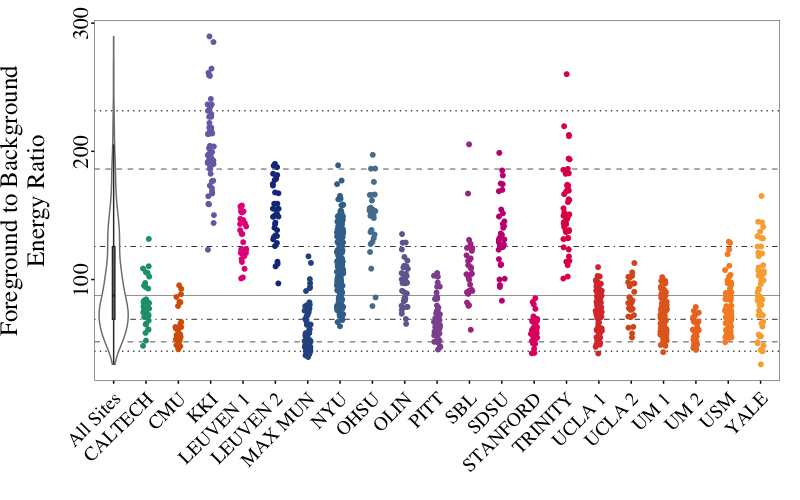
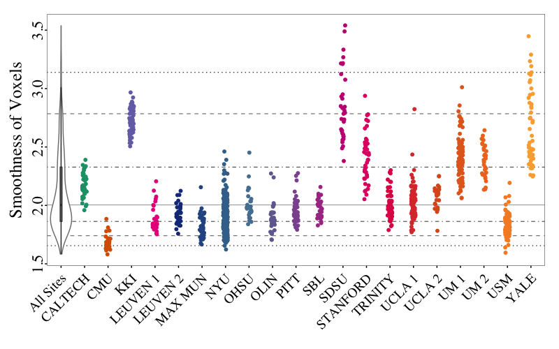
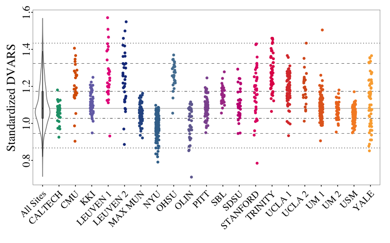
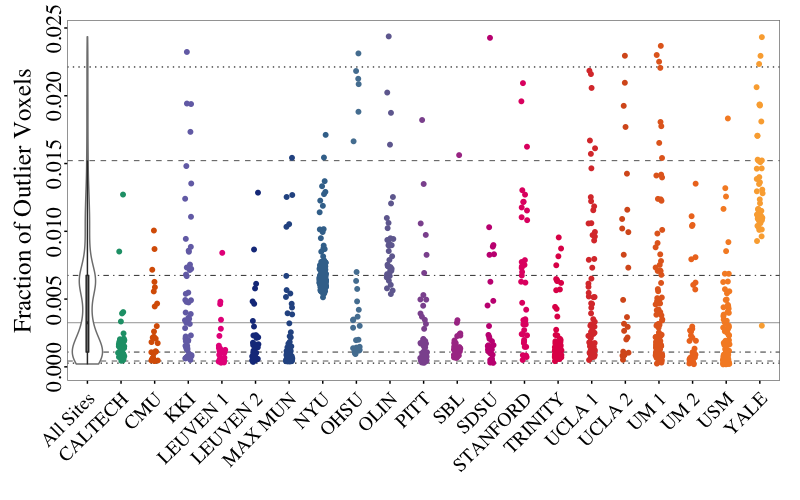
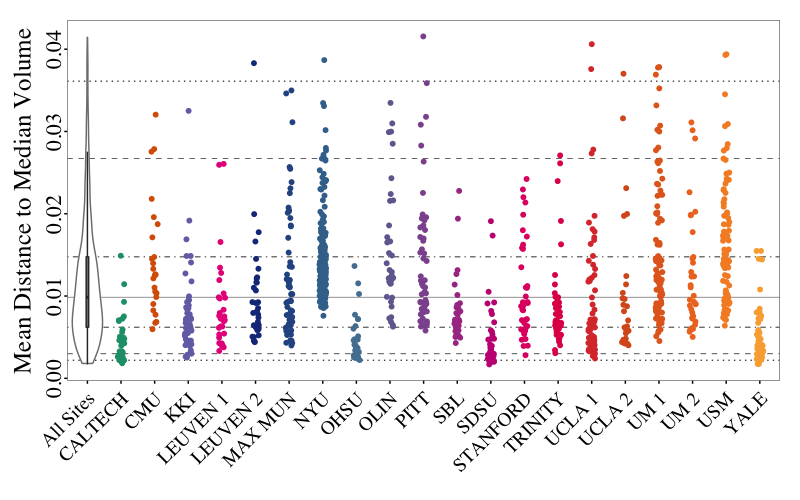
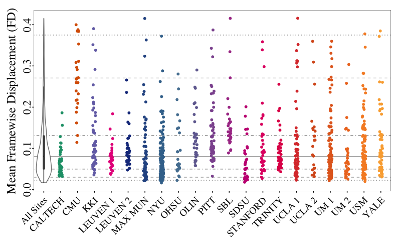
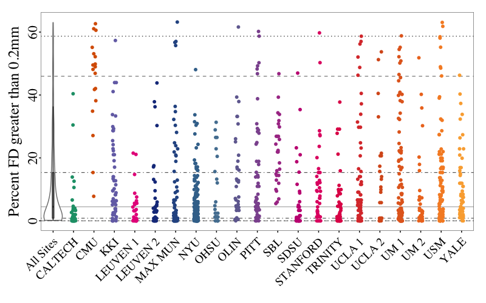
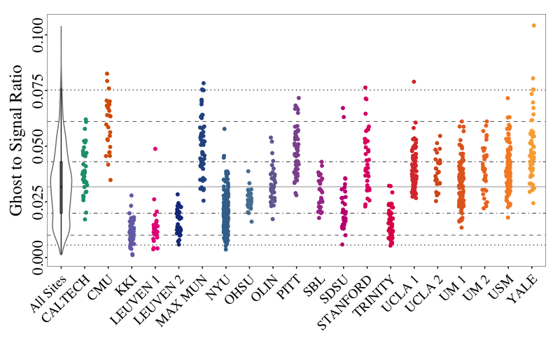
Manual QA
Manual inspection of the data was carried out by three independent raters. Rater 1 examined the general quality of the data focusing on the preprocessed functional data and derivatives. Raters 2-3 examined the quality of the raw anatomical and functional data. Ratings are given as OK and fail for raters 1 and 3, and OK, maybe, and fail for rater 2. Each rater also may have taken notes related to their ratings, thus there is a notes column associated with each rating column.
References
-
Magnotta, V. A., & Friedman, L. (2006). Measurement of signal-to-noise and contrast-to-noise in the fBIRN multicenter imaging study. Journal of Digital Imaging, 19(2), 140-147. ↩ ↩2
-
Farzinfar, M., Dietrich, C., Smith, R. G., Li, Y., Gupta, A., Liu, Z., & Styner, M. A. (2012, May). Entropy based DTI quality control via regional orientation distribution. In Biomedical Imaging (ISBI), 2012 9th IEEE International Symposium on (pp. 22-25). IEEE. ↩ ↩2
-
Friedman, L., Stern, H., Brown, G. G., Mathalon, D. H., Turner, J., Glover, G. H., … & Potkin, S. G. (2008). Test–retest and between‐site reliability in a multicenter fMRI study. Human brain mapping, 29(8), 958-972. ↩
-
Mortamet, B., Bernstein, M. A., Jack, C. R., Gunter, J. L., Ward, C., Britson, P. J., … & Krueger, G. (2009). Automatic quality assessment in structural brain magnetic resonance imaging. Magnetic Resonance in Medicine, 62(2), 365-372. ↩
-
Power, J. D., Barnes, K. A., Snyder, A. Z., Schlaggar, B. L. & Petersen, S. E. Spurious but systematic correlations in functional connectivity MRI networks arise from subject motion. Neuroimage 59, 2142-2154 (2012). ↩ ↩2
-
Nichols, T. (2012, Oct 28). Standardizing DVARS. Retrieved from http://blogs.warwick.ac.uk/nichols/entry/standardizing_dvars. ↩
-
Cox, R.W.. AFNI: Software for analysis and visualization of functional magnetic resonance neuroimages. Computers and Biomedical Research, 29:162-173, 1996. ↩ ↩2
-
Jenkinson, M., Bannister, P., Brady, M., & Smith, S. (2002). Improved optimization for the robust and accurate linear registration and motion correction of brain images. Neuroimage, 17(2), 825-841. ↩